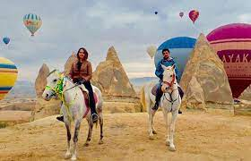
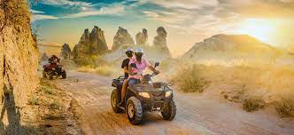

ACTIVITIES IN CAPPADOCIA
-

Hot Air-Balloon in Cappadocia
Enjoy a slightly longer experience floating Cappadocia's stunning landscape. Upon landing, passengers will be enjoy a buffet breakfast and champagne toast. Just hop in your basket and join the hosts of brightly hued balloons that float above the region's volcanic spires and honeycombed hills. Here are your options.
-

Horse riding in Cappadocia
An unforgettable horse tour in the most beautiful places of Cappadocia. A wonderful horse tour with the most beautiful horses of Cappadocia on horseback with the routes according to the time you choose.
-

ATV riding in Cappadocia
Enjoy outdoor adventure in Cappadocia on this off-road quad-bike safari. Clip on your helmet and following a full safety briefing. Explore Sword, Rose, and Love valley, and admire panoramic views over the volcanic formations for which the region is famous. Read more about Quad Safari through Rose Sword and Love Valleys
-

Watch Sun-Rise in Cappadocia
Float over the valley to take in the early morning sunrise over the mountains, illuminated in stunning golden hues. Snap some photos of the iconic .